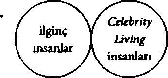

Dünyanın En Büyük Haçı m geçtikten iki saat sonra Hasan konuyu tekrar açtı.
“Dünyanın En Büyük Haçı’mn Kentucky’de olduğunu önceden biliyor muydun?” diye haykırdı, açık camdan çıkardığı sol elini hızla akan havaya doğru sallarken.
“Bugün öğrendim,” diye yanıt verdi Colin. “Ama dünyanın en büyük kilisesinin Finlandiya’da olduğunu biliyordum.” “Hiç ilginç değil,” dedi Hasan. Hasan’ın ilginç bulmadığı konular Colinin diğer insanların duymaktan hoşlandığı ve hoşlanmadığı şeyleri algılamasına yardımcı olmuştu. Colin bunu Hasandan önce çözememişti çünkü herkes onunla ya dalga geçiyor ya da onu büsbütün yok sayıyordu. Veya Katherine’ler söz konusu olduğunda dalga geçildikten sonra yok sayılıyordu.
Colinln ilginç olmayanlar listesi sayesinde12 normale göz kırpan bir sohbet tutturabiliyordu.
Uç yüz kilometre ve bir ihtiyaç molası sonra Kentucky’den sağ salim çıkmış, Nashville ile Memphis arasında bir yere gelmişlerdi. Açık camlardan giren rüzgâr onları pek serinletmeden terlerini kurutuyordu ve Colin klimalı bir yer bulup bulamayacaklarım düşünürken pamuk veya mısır veya soya fasulyesi veya ona benzer bir şey tarlasının13 tepesinde yükselen, elle boyanmış tabela dikkatini çekti. 212. KAVŞAKARŞİDÜK FRANZ FERDINANDTN MEZARI1. DÜNYA SAVAŞINI BAŞLATAN ÖLÜM.
“Bu hiç olası değil,” dedi Colin kısık sesle.
“Ben sadece bir yerlere gitmemiz lazım diyorum, o kadar,” dedi Hasan, onu duymamıştı. “Yani bu eyaletler arası yolla bir alıp veremediğim yok ama güneye gittikçe hava ısınacak ve ben zırıl zırıl terliyorum zaten.”
Colin ağrıyan boynunu ovarken otele verecek kadar parası olduğunda geceyi bir daha asla arabada geçirmeyeceğini düşünüyordu. “Tabelayı gördün mü?” diye sordu.
“Hangi tabelayı?”
“Arşidük Franz Ferdinand’ın mezarı yazanı.”
12 Diğer çok ama pek çok konu arasında şunlar hiç umursanacak gibi değildi: göz büzgeni, mitoz bölünme, barok mimari, can alıcı noktası fizik denklemi olan espriler, İngiltere’de monarşi, Rusça dil bilgisi ve insanlık tarihinde tuzun oynadığı önemli rol.
13 Ekin tespiti Colin’in yetenekleri arasında yer almıyordu.
Hasan yolla pek ilgilenmeden Coline dönüp gülümsedikten sonra omzuna hafifçe vurdu. “Harika. Harika. Zaten öğle yemeği vakti geldi.”
Colin,Tennessee 212. Kavşaktaki Hardee’s’in otoparkında yolcu koltuğundan kalkarken annesini aradı.
“Selam, Tennessee’ye geldik.”
“Nasılsın, canım?”
“Daha iyi gibiyim. Bilmiyorum. Hava sıcak. Şey, beni kimse aradı mı?”
Annesi duraksadı, Colin onun o feci acıma duygusunu hissedebiliyordu. “Ne yazık ki, tadım. Ama şey, birisi ararsa cep numaram veririm.”
“Sağ ol anne. Ben Hardees’te yemek yemeye gidiyorum.”
“Ne güzel. Emniyet kemeri takmayı unutma! Seni seviyorum!”
“Ben de.”
Boş restoranda yağından ödün vermeyen bir Hayvani Doygunburger yedikten sonra Colin kasanın başında duran, muhtemelen çalıştığı yerde biraz fazla yemekten muzdarip kadına Franz Ferdinand’ın mezarına nasıl gidebileceklerini sordu.
“Kim?” diye sordu kadın.
“Arşidük Franz Ferdinand.”
Önce boş boş bakan kadının bir an sonra göden parladı. “Ha siz Gutshot’ı soruyosunuz. Ücra yerlere gitmek istiyosunuz ha.”
“Gutshot mı?”
“Aynen. Şimdi bak napcaksımz söyliyim, parktan çıkın, sağa dönün ama otoyoldan bu yana dönüceksiniz, sonra bi yaklaşık üç kilometre kadar gidince yol ikiye ayrılır. Orda kapalı bi benzinlik var. Ordan sağa sapın, on beş yirmi kilometre dümdüz gidin. Yol yukarı çıkıcak, ora Gutshot.”
“Gutshot.”
“Gutshot, Tennessee. Arşidük orda.”
“Yani önce sağ, sonra tekrar sağ.”
“Ha aynen. Hadi iyi eğlenceler.”
“Gutshot,” diye tekrar etti Colin kendi kendine. “Peki, teşekkürler.”
Son asfaltlama çalışmasından sonra, bahsi geçen o on beş yirmi kilometrelik yol bir depremin merkez üssü olmuş gibi görünüyordu. Colin dikkatli sürüyordu fakat Cenaze Arabası’nın eskimiş amortisörleri bitmek tükenmek bilmeyen çukurlar ve çadamış asfalt dalgalan yüzünden gıcırdayıp duruyordu. “Arşidükü görmesek de olurdu aslında,” dedi Hasan.
“Bu bir yol macerası! Olayı serüven ” âsyç, taklit yaptı Colin. “Sence Gutshot, Tennessee sakinleri hayatlarında hiç kanlı canlı bir Arap görmüş müdür?”
“Paranoyaklık yapma.”
“Ya da Yahudi aftosu görmüşler midir mesela?”
Colin bir süre düşünüp cevap verdi: “Hardees’teki kadın sıcakkanlıydı.”
“Olabilir ama Hardees’teki kadın Gutshot’ı ‘ücra yer diye betimledi,” dedi Hasan kadının aksamnı taklit ederek. “Yani demem o ki Hardee s merkeziyse, kırsalı görmek istediğimden emin değilim.” Hasan söylenmeye devam ederken Colin de kahkaha atıp gerekli yerlerde gülümsüyordu ama bir yandan araba sürerken bir yandan da doksan yıldan uzun süre önce Saraybosna’da ölmüş ve önceki gece öylesine aklına düşmüş olan Arşidükün kendisi ile gitmekte olduğu yön arasında bulunmasının olasılığını hesaplıyordu. Mantıklı değildi ve Colin mantıksızlıktan nefret ederdi ama Arşidükün huzurunda olmanın eksik parçasıyla ilgili bir şeyler ortaya çıkarabileceğini düşünmekten kendini alamıyordu. Evrenin inşam öyle veya böyle bir yerlere yönlendirmek için kumpas kurmadığını Colin elbette biliyordu. Aldı Demokritos’a gitti: “İnsan her yerde doğa ile kaderi suçlar ancak kaderi çoğunlukla kişiliği ve tutkularının, hataları ve zayıflıklarının bir yansımasıdır.”14
Yani sonuçta onu Gutshot,Tennesseeye getiren kader değil, Colin Singleton’ın kişiliği ve tutkuları, hataları ve zayıflıklarıydı. Yol tabelasında NÜFUS: 864 yazıyordu. Gutshot, ondan önce gördüklerinden farklı durmuyordu, yolu daha düzgündü o kadar. Cenaze Arabası’nın iki yanından kısa, parlak yeşil bitkileriyle sonsuz griliğe doğru uzanan tarlalar ara sıra birkaç at, ahır veya ağaçlıkla bölünüyordu. Sonunda Colin yol kenarında korkunç bir pembeye boyalı, iki katil tuğla bir bina gördü.
Sanırım şurası Gutshot,” dedi binayı işaret edip.
Einanın yanında elle yazılmış bir tabelada GUTSHOT KRALLIĞIARŞİDÜK FRANZ FERDİNAND’IN EBEDÎ İSTİRAHAT YERİ / BUZ GİBİ BİRA / GAZOZ / BALIK YEMİ yazıyordu.
Colin dükkânın çakıllı otoparkına çekti. Kemerini çözerken Hasan’a döndü: “Acaba Arşidük gazozlann mı yoksa balık yeminin mi yanında merak ediyorum.”
Hasanın kahkahası arabanın içinde yankılandı. “Colin şaka da yaparmış! Burası sana çok iyi geldi. O yüzden burada ölecek olmamız çok yazık. Bir Arap ile yarı Yahudi, Tennessee’de bir dükkâna girerler. Kulağa fikra gibi geliyor ama vurucu kısmı oğlancılık’.” Her şeye rağmen Colin arkasından gelen Hasan m çakılların üstünde ayaklarım sürüdüğünü duydu.
Gutshot Market’in sineklikli kapısından içeri girdiler. Uzun ama düz burunlu, iki ufak gezegen boyutunda kahverengi gözleri olan kasiyer kız başını Celebrity Living dergisinden kaldırıp, “N’abersiniz?” dedi.
Hasan, “iyiyiz. Siz nasılsınız?” diye karşılık verirken Colin insanlık tarihinde herhangi bir önemli insanın, tek bir Celebrity Living nüshası okuyup okumamış olduğunu düşünüyordu.15
15 Verin şemasında göstermek gerekirse Colin dünyanın şu şekilde göründüğünü savunurdu:

“İyidir,” dedi kız.
Bir süre zemin döşemesi olarak kullanılan tozlu cilalanmış kerestelerin üstünde dolanıp atıştırmalık, içecek ve yem tanklarının içinde yüzen minik balıklarla ilgileniyormuş gibi yaparak dükkânda gezindiler. Göğüs hizasına gelen bir cips dolabının arkasına yan yanya çömelen Colin, Hasanın tişörtüne asıldıktan sonra elini kulağına götürüp, “Kızla konuşsana? diye fısıldadı. Tabii aslında Colin fisıldamamıştı çünkü fısıldama sanatında hiçbir zaman ustalık kazanamamıştı... Hasan’ın kulak zanna biraz daha yumuşak bir sesle konuşmuştu sadece.
Hasan irkilip başını salladı. “Kansas eyaleti toplam kaç kilometrekare?” diye fısıldadı.
“Şey, aşağı yukarı 213.000. Neden?”
“Bunu bilip ses tellerini kullanmadan nasıl konuşacağım bilememen inanılmaz da o yüzden.” Colin fısıldamanın bile ses tellerini kullanmayı gerektirdiğini açıklamaya başlamıştı ki Hasan gözlerini devirdi. Bu yüzden Colin elini yüzüne götürüp başparmağım kemirirken umut dolu gözlerle Hasana baktı fakat Hasan patates cipsleriyle ilgilenmeye başlayınca iş Colinln başına kaldı. Kasaya gidip, “Merhaba, biz Arşidükü merak etmiştik de,” dedi.
Celebrity Living okuru gülümsedi. Tombul yanakları ve fazla uzun burnu yok oldu. Gülümsemesi öylesine geniş ve kurnazdı ki insana inanmaktan başka çaresi yokmuş gibi hissettiriyordu. .. tekrar tekrar görebilmek için onu mutlu etmeyi istettirecek türden bir gülümsemeydi. Ama hemencecik kay
boldu. “Turlar her saat başı başlıyor, on bir dolar ve gerçekten değmiyor,” diye karşılık verdi tekdüze bir tonla.
“Önemli değil,” dedi Colin’in arkasında biten Hasan. “Arkadaşın, Arşidükü görmesi lazım.” Sonra uzanıp yapmacıktan, “Sinir krizi geçiriyor da,” diye fısıldadı. Tezgâha yirmi iki dolan koyduğu gibi, kız önündeki kasayı alenen umursamadan parayı şort cebine soktu.
Yüzüne düşen kahverengi saç tutamını üfleyip iç geçirdi. “Dışarsı sıcak.”
“Bu rehberli tur gibi bir şey mi?” diye sordu Colin.
“Evet. Ve ne yazık ki tur rehberi de benim.” Tezgâhın arkasından çıktı. Kısa boyluydu. Sıskaydı. Suratı ilgi çekecek kadar güzel değildi.
“Ben Colin Singleton,”dedi tur rehberi/market kasiyerine.
“Lindsey Lee Wells,” diye karşılık verdi kız soyulmuş metalik pembe ojeli ufak elini uzatırken. El sıkıştıktan sonra Hasana döndü.
“Hasan Harbish. Sünni Müslümamm. Terörist değilim.”
“Lindsey Lee Wells. Metodistim. Ben de değilim.” Yine gülümsedi. Colin kendisinden ve K19 ile midesinden eksilmiş parçadan başka bir şey düşünmüyordu... ancak o gülümsemeyi göz ardı etmek mümkün değildi. O gülümseme nice savaşlar bitirip kansere çare olabilirdi.
Uzun süre marketin arkasındaki dize gelen otların içinde sessizce yürüdüler, bu otlar Colin in açıktaki hassas baldırlarını yaktığı için bunu dile getirmeyi ve üstünden yürüyebilecekleri, kısa süre önce biçilmiş otların olduğu bir yer olup olmadığını sormayı düşündü ama Hasanın bunu “sitzpinklerimsi”bulacağım bildiğinden otlar tenini kaşındırırken sesini çıkarmadı. Günler boyunca bir avuç toprağa basmadan yürünebilecek Şikagoyu düşündü. O dayalı döşeli dünya hoşuna gidiyordu ve bileğini burkma tehlikesi yaratan engebeli sert toprakta attığı her adımda orayı özlüyordu.
Lindsey Lee Wells önlerinde yürürken (tipik Celebrity Living okuru işte; onlarla konuşmaktan imtina ediyordu) Hasan, Colinln yanından gidiyordu ve otlara alerjisi olduğu için Colin’e henüz teknik olarak sitzpinkler dememiş olsa bile Colin diyebileceğini bildiğinden cam sıkılmıştı. Bu yüzden Hasanın en sevmediği konuyu tekrar açtı.
“Üniversiteye gitmen gerektiğinden bugün de bahsettim mi?”
Hasan gözlerini devirdi. “Evet evet, biliyorum. Ama akademik başarının seni getirdiği noktaya bir bak önce.”
Colin zekice bir karşılık bulamadı. “Ama bu sene gitmen lazım. Sonsuza kadar gitmezlik yapamazsın. Temmuzun on beşine kadar kayıt yaptırabiliyormuşsun.” (Colin araştırmıştı.)
“Aslına bakarsan sonsuza kadar gitmezlik yapabilirim. Daha önce de dedim, şimdi de diyeyim: Kıçımı yayıp oturmayı, televizyon izlemeyi, şişmanlamayı seviyorum. Hayatımm olayı bu, Singleton. Yolculukları da bu yüzden seviyorum, dostum. Aslında bir şey yapmadan bir şey yapmak gibi. Hem babam da üniversiteye gitmemiş ama hayaları bile altın kaplama.”
Colin altın kaplama hayaların nasıl olacağını düşündü fakat sadece, “İyi ama baban yine de kıçım yayıp oturmuyor. Haftada yüz saat falan çalışıyor,” demekle yetindi.
“Evet aynen. Ve kendisi sayesinde benim de işe veya üniversiteye gitmem gerekmiyor.”
Colin in buna verecek karşılığı yoktu. Ancak Hasan’ın kayıtsızlığım da anlamıyordu. En azından dikkate değer bir şey yapmaya çalışmayacaksan hayatta olmamn anlamı neydi? Tanrının sana hayat verdiğine inanıp hayatın senden televizyon izlemekten fazlasını isteyebileceğini düşünmemek harbiden garipti.
Öte yandan belld de, on dokuzuncu Katherine’inin hatırasından kaçabilmek için bir yolculuğa çıkmış, bir AvusturyaMacaristan Arşidükünün mezarına gitmek üzere Tennessee’nin güneyine yakın bir yerlerde dolanırken kalkıp da herhangi bir şeyi harbiden garip diye betimleme hakkına sahip olunmuyordu.
Bu esnada harbiden garip kelimelerinden anagram yapmakla meşguldü: giden bir harap, harbi giden arp, eh bir garip DNA... derken Colin garip DNAsıyla gurur duyacağı bir şey yaptı: Bir köstebek yuvasına takılıp düştü. Hızla yaklaşan zemin yüzünden ne yapacağını öyle bir şaşırmıştı ki düşüşünü yavaşlatabilmek için ellerini bile kullanmadı. Sanki sırtından vurulmuş gibi öne devrildi. Yere ilk çarpan şey gözlüğüydü. Bunu takip edense ufak bir taşa çarpan alnı oldu.
Sırtüstü yuvarlandı ve “Düştüm,” diye duyurdu oldukça yüksek sesle.
“Sıçtık!” diye bağırdı Hasan. Colin gözlerini açarken Hasan ile Lindsey Lee Wells’in diz çökmüş, ona baktıklarım bulanık da olsa görebildi. Kızdan yoğun bir meyvemsi koku geliyordu ki Colin parfümün Curve olduğunu tahmin ediyordu. Bir keresinde XVII. Katherine’e almıştı ama o beğenmemişti.16 “Kanıyor, değil mi?” diye sordu Colin.
“Hem de ne biçim,” dedi kız. “Hareket etme.” Hasaria dönüp, “Tişörtünü ver,” deyince Hasan büyük bir hızla reddetti ki Colin bunun sebebinin Hasarim memeleri olduğunu tahmin ediyordu. “Basınç uygulamamız lazım,” diye açıklama yaptı Lindsey, Hasana fakat Hasan büyük bir sükûnetle tekrar hayır deyince Lindsey, “Off iyi be,” deyip kendi tişörtünü çıkardı.
Colin gözlüksüz bulanıklığa gözlerini kısarak bakmasına rağmen pek bir şey göremiyordu. “Bunu ikinci randevuya bıraksak daha iyi olur,” dedi.
“Çok komik, sapık,” diye karşılık verdi Lindsey ama Colin, sesinden gülümsediğini anlayabiliyordu. Colinin alm ve yanağım tişörtüyle silip sağ kaşının üstündeki hassas noktaya basınç uygularken konuşmaya devam etti: “Arkadaşın müthiş bir insanmış bu arada. Boynunu kıpırdatma. Şu anda başımıza bela açabilecek iki şeyden biri omur zedelenmesi, öteki subdural hematom. Yani bunlann olma ihtimali gerçekten ama gerçekten düşük, biz yine de dikkatli olalım çünkü en yakın hastane bir saatlik mesafede.” Colin gözlerini kapadı ve Lindsey yaraya
16 “Boynuma çiğnenmiş çilekli sakız sürmüşüm gibi kokuyor,” demişti ama tam olarak öyle değildi. Çilekli sakız kokulu parfüm gibi kokuyordu ki bu gerçekten hoş bir kokuydu.
basınç uygularken irkilmemeye çalıştı. “Tişörtle şuraya baskı yap. Sekiz dakikaya döneceğim,” dedi Hasan’a.
“Doktor filan çağırmamız lazım,” dedi Hasan.
“Ben paramediğim,” diye karşılık verdi Lindsey dönerken. “Kaç yaşında olabilirsin ki?” diye sordu Hasan.
“On yedi. İyi be tamam. Henüz eğitim alıyorum. Sekiz dakika. Yemin ederim.” Koşarak uzaklaştı. Colin in hoşuna giden Curve’ün kokusu değildi... Yani tam olarak değiL Lindsey koşarak uzaklaştığı sırada havada kalan kokuydu. Parfümün ardında bıraktığı koku. İngilizcede böyle bir kelime yoktu ama Colin Fransızcasını biliyordu: sillage. Curve’de sevdiği şey tendeki kokusu değil, sillage’ı, peşinde bıraktığı şekerli meyvemsi kokuydu.
Hasan kesiğe sertçe bastırırken uzun otların arasına çöktü. “Tişörtümü çıkarmadığım için kusura bakma.”
“Memelerin yüzünden mi?”
“Eh, evet. Memeleri teşhir etmeden önce bir kızı daha iyi tanımak gerek diye düşünüyorum. Gözlüğün nerede?”
“Kız tişörtünü çıkardığı sırada ben de kendime aynı soruyu soruyordum,” dedi Colin.
“Onu göremedin mi yani?”
“Göremedim. Ama sütyeni mordu.”
“Hem de ne biçim,” diye karşılık verdi Hasan.
Ve Colin, yatağında mor sütyeniyle oturup kendisini terk eden K19 u düşündü. Ve sütyeni ile diğer her şeyi de siyah
olan XIV. Katherine’i düşündü. Sonra ilk sütyen giyen XII. Katilerine! ve sütyenlerini gördüğü tüm Katherine’leri (askılarını saymazsa dört, sayarsa yedi tane)... İnsanlar cezaya doymadığını, terk edilmekten hoşlandığım düşünüyorlardı. Fakat öyle değildi. Sadece hiçbir şeyi önceden kestiremiyordu ve sert, engebeli toprakta yatmış, Hasan alnına biraz fazla bastırırken, Colin Singletonın gözlüğüyle olan mesafesi problemin farkına varmasını sağladı: Miyopluk Uzağı göremiyordu. Gelecek önünde uzanıyordu ve kaçınılmaz olduğu kadar görünmezdi de.
“Buldum,” dedi Hasan ve gözlüğü garip hareketlerle yüzüne yerleştirmeye çalıştı. Fakat başka birisinin kafasına gözlük takmak zor olduğundan sonunda Colin uzanıp gözlüğü burnuna yerleştirdi ve görebildi.
“Evreka,” dedi kısık sesle.
XIX. Katherine: Sonun Sonu
On ikinci ayın sekizinci gününde, birinci yddönümlerine sadece yirmi iki gün kala terk etmişti. Farklı okullarda olmalarına rağmen ikisi de o gün mezun olduğundan Colin ile Katherine’in eskiden beri birbirini tanıyan ebeveynleri onlan öğlen kutlama yemeğine çıkarmıştı. Fakat akşam baş başa kalacaklardı. Colin tıraş olup Katherine’in çok sevdiği ve kokusunu alabilmek için göğsüne sokulduğu Wild Rain deodorantını sıkmıştı.
Şeytariın Cenaze Arabasıyla onu almıştı; Lakeshore Yolundan güneye doğru sürmüş, kayalık kıyıya vuran Michigan Gölü’nün dalga seslerini duyabilmek için motor gürültüsüne
rağmen pencereleri açmışlardı. Şikago’nun silüeti önlerinden göğe yükseliyordu. Colin, Şikago silüetini hep sevmişti. Dinî inana olmamasına rağmen bu silüeti görmek Latincede mysterium tremendum etfascinans adı verilen bir hisse kapılmasına sebep oluyordu... İnsanın midesini kasan, huşuyla karışık bir korku ile mest edici bir büyülenmişlik hissi.
Şehir merkezine girerek Loop’taki, tepelerinde yükselen binaların arasında dolandılar ve Katherine her zaman her şeye geç kaldığı için çoktan geç kaldıklarından on dakika boyunca park yeri aradıktan sonra Colin bir otoparka on sekiz dolar verdi ki bu da Katherinem sinirine dokundu.
“Sokakta yer bulabilirdik bence,” dedi otoparktaki asansörü çağırırken.
“Neticede param var ve geç kaldık.”
“Ihtiyaan olmayan şeylere para harcamamaksın.”
“Suşiye elli dolar vermek üzereyim,” diye karşılık verdi Colin. “Senin için.” Asansörün kapıları açıldı. Bezginlikle asansörün ahşap kaplamasına yaslandı ve iç geçirdi. Restorana girip de tuvaletin yakınındaki minik masaya geçene kadar tek kelime etmediler.
“Mezun olmamıza ve harika bir yemeğe,” dedi Katherine kolasını kaldırırken.
“Bildiğimiz hayatın bitimine,” diye karşılık verdi Colin bardaklarım tokuştururlarken.
“Tanrım, Colin, dünyanın sonu gelmedi.”
“Bir dünyanın sonu geldi,” dedi ciddiyetle.
“Northwestem’daki en zeki çocuk olamayacağından mı korkuyorsun?” Gülümsedikten sonra iç geçirdi. Colin bir anda karnının kasıldığını hissetti... geriye dönüp bakıldığında bir parçasının yakın zamanda eksilebileceğine dair ilk ipucu buydu.
“Neden iç geçiriyorsun?” diye sordu.
O sırada garson gelip dörtgen bir tabakta Kaliforniya maki ve füme somon nigiri getirerek araya girdi. Katherine yemek çubuklarını ikiye ayırırken Colin eline çatal aldı. Havadan sudan sohbet edebilecek kadar Japonca biliyordu ancak yemek çubuklarını aklı almıyordu.
“Neden iç geçirdin?” diye sordu tekrar.
“Tanrım, bir sebebi yok.”
“Yapma işte söyle,” dedi Colin.
“Sen... Tek yaptığın şey sıradan biri olmaktan ya da terk edilmekten veya o tip şeylerden endişelenmek ama bir saniye bile durup bir şeylere şükran duymuyorsun. Bölüm birincisi oldun. Seneye çok iyi bir okula gideceksin hem de burslu olarak. Artık üstünzekâlı bir çocuk değilsen ne olmuş? Bu iyi bir şey. En azından artık çocuk değilsin. Daha doğrusu öyle olmaman beklenir.”
Colin çiğnemekle meşguldü. Suşinin etrafındaki yosunu seviyordu; çiğnemesi zordu, hafiften okyanus tadı vardı. “Anlamıyorsun,” dedi.
Katherine çubuklarını soya sosu çanağına dayayıp feci bir hayal kırıklığıyla ona baktı. “Neden böyle söyleyip duruyorsun?”
“Çünkü doğru,” demekle yetindi ki Katherine gerçekten anlamıyordu. Hâlâ güzeldi, hâlâ komikti, hâlâ yemek çubuğu
kullanabiliyordu. Coliriin elindeki tek şey dehaydı, tıpkı bir lisanda kelimelerin olması gibi.
Bu atışma sırasında Colin, Katherine’e kendisini hâlâ sevip sevmediğini sorma dürtüsüyle savaşıyordu çünkü Katherine’in anlamadığının söylenmesinden daha çok nefret ettiği tek şey Colin’in ona onu hâlâ sevip sevmediğini sormasıydı. Colin bu dürtüyle savaştı, savaştıkça savaştı. Yedi saniye kadar.
“Beni hâlâ seviyor musun?”
“Of Tanrım, Colin yapma işte. Mezun olduk. Muduyuz. Kutlama yapıyoruz!”
“Söylemeye çekiniyor musun?”
“Seni seviyorum.”
Katherine bu kelimeleri ona bir daha hiçasla ve aslabu sırayla söylemeyecekti.
“Maki kelimesinden anagram çıkar mı?” diye sordu.
“A, kim?” dedi Colin arımda.
“Kim üç harf; maki dört.”
“Hayır hayır. ‘A, kim?’ A ve kim. Başka da çıkıyor ama anlandı değiller.”
Katherine gülümsedi. “Sormamdan sıkılıyor musun?”
“Hayır. Hayır. Yaptığın hiçbir şeyden sıkılmıyorum,” dedi ve ardından özür dilemek istedi ama kimi zaman anlaşdabilir biri değilmiş gibi hissediyordu ve bazen böyle tartıştıklarında ve Katherine’in onu sevdiğini uzunca bir süre söylemediği zamanlarda endişeleniyordu ancak kendisini tuttu. “Hem maki kelimesinin a, kim’ olması hoşuma gitti. Bir durum hayal et.”
“Bir durum hayal et” Katherine’in icat ettiği ve Colin in anagram yapıp kendisinin anagrama uygun bir durum hayal ettiği bir oyundu.
“Peki,” dedi. “Hımm. Adamın teki iskeleye balık tutmaya gitmiş, bir sazan yakalamış ama tabii balık Michigan Gölü’ndeki tarım ilaçları ve pislikten ibaretmiş fakat adam uzun süre pişirirse balığın zehirlemeyeceğini düşünmüş. Balığı temizlemiş, filetosunu çıkarmış, o sırada telefon çalınca mutfak tezgâhında öylece bırakmış. Biraz telefonda konuştuktan sonra mutfağa dönünce bir de bakmış ki küçük kız kardeşi elindeki Michigan Gölü’nden çıkmış o pis balığı kemiriyor. Kız ağabeyine bakıp, ‘Bak maki!’ demiş. Adam da şok içinde ‘A, kim!?’ demiş.”
Gülüştüler. Colin, Katherine’i hiç o anda sevdiği kadar çok sevmemişti.
Parmak uçlarında eve girdikten sonra; Colin’in, annesine eve döndüğünü haber vermek için yukarı çıkmasından ama aynı konu başlığı altında olmasına rağmen yalnız olmadığım söylememesinden sonra; aşağı kattaki yatağa girdikten, Katherine, Colin’in ve Colin de Katherine’in tişörtünü çıkardıktan sonra; Colin’in dudakları hafifçe sızlamaları dışında uyuştuktan sonra Katherine, “Mezun olduğun için gerçekten üzgün müsün?” diye sormuştu.
“Bilmiyorum. Farklı şeşler olsaydı... mesela on yaşında filan üniversiteye gitseydim hayatımın daha iyi olup olmayacağım bilmeye imkân yok. Muhtemelen birlikte olmazdık. Hasanla tanışmamış olurdum. Birçok dâhi kendini zorluyor, zorladıkça
zorluyor ve benden daha boktan bir hale geliyorlar. Çok azı da John Locke17 veya Mozart filan oluyor. Benim Mozartistan’a girme ihtimalim artık yok.”
“Col, daha on yedi yaşındasın.” Tekrar iç geçirdi. Çok iç geçiriyordu ama herhangi bir sorun olması mümkün değildi çünkü başı Colin’in omzundayken ve Colin yumuşacık sarı saçlarını yüzünden geriye doğru çekerken göğsüne yaslanmış yatması çok güzel hissettiriyordu.
“Kaplumbağa ve tavşan olayı gibi, K.18 Diğerlerinden hızlı öğreniyor olabilirim ama onlar öğrenmeye devam ediyorlar. Ben yavaşladım, onlarsa yetişiyorlar. On yedi yaşında olduğumu biliyorum fakat en iyi yıllarımı geride bıraktım.” Katilerine güldü. “Ciddiyim. Bunlarla ilgili yapılmış araştırmalar var. Dâhiler zirveye on iki veya on üç yaşında vuruyorlarmış. Peki ya ben ne yaptım? Bir yıl önce soktuğumun yarışma programlarından birinde ödül kazandım, bu mu yani? İnsanlık tarihine atabileceğim kalıcı imza bu mu?”
Katherine oturup Coline baktı. Colin onun öteki iç geçirmelerini düşünüyordu, kendi vücudu onunkine sürünürkenki daha iyi ve farklı olan iç geçirmelerini. Katherine uzun süre ona baktıktan sonra alt dudağını ısırıp dedi ki, “Colin belki de mesele bizimle ilgilidir.”
17 Biz henüz ayakkabımızı bağlayamazken Latince ve Yunanca okuyup yazabilmeye başlamış olan İngiliz filozof ve siyaset bilimci.
18 Colin’in hâlâ kaplumbağa ile tavşan öyküsünün anlamını tam olarak kavrayamadığını fark etmişsinizdir ancak şimdiye kadar öykünün bir kaplumbağa ile tavşandan daha fazlasından bahsettiğini anlamıştı.
“Hay sokayım,” dedi Colin. Ve böylece başladı.
“Son” genel olarak Katherine’in fısıltıları ve Colin uı sessizliğiyle vuku buldu çünkü Colin fisıldayamıyordu ve Colimn ebeveynlerini uyandırmak istemiyorlardı. Sessiz kalmayı başarabildiler, bunun bir sebebi de Colinın darbe etkisiyle havanın içinden çekilmiş gibi hissetmesiydi. Çelişkili bir şekilde koskoca karanlık ve sessiz gezegende gerçekleşen tek şey terk edilmesiymiş gibi hissederken aynı zamanda bu olmuyormuş gibi geliyordu. Tek taraflı fisıltılı konuşmadan uzaklaştığım, büyük ve yürek yakan ve kavranamaz her şeyin çelişki olup olmadığını merak ediyordu.
Onu kurtarmaya çalışan cerrahlara bakan ölüm döşeğindeki bir adamdı. Kendisini olan bitenden zarar görmeyeceği bir mesafeye kadar uzaklaştırınca Colin züğürt tesellisi bir sözü düşünmeye başladı: Taşlar ve sopalar kemiklerimi kırsa da kelimeler canımı yakmaz asla. Ne pis bir yalandı ama. İşte hakiki Karındeşen Jack’mece buydu: Midesine bir şeyler saplanıyormuş gibi hissediyordu.
“Seni çok seviyorum ve senin de beni benim seni sevdiğim kadar sevmeni istiyorum,” dedi yapabileceği kadar kısık sesle.
“Senin bir kız arkadaşa değil, sana seni seviyorum’ cümlesinden başka bir şey söylemeyen bir robota ihtiyacın var, Colin.” Ve bu sanki içeriden taşlanıp sopalanıyormuş gibi hissettirdi; önce bir çarpıntı, sonra kaburgalarının altına saplanan keskin bir acı... ve işte ilk kez o zaman midesinden bir parçanın sökülüp çıkartıldığını hissetti.
Katherine olabildiğince hızlı ve acısız bir şekilde bitirmeye çalışmıştı ancak gitmeye yeltendiği anda Colin ağlamaya başladı. Katherine onun köprücük kemiğine dayalı başım tuttu ve Colin her ne kadar kendini zavallı ve rezil hissetse de bitmesini istemiyordu çünkü onun yokluğunun herhangi bir ayrılıktan daha kötü acıtacağını biliyordu.
Ancak Katherine yine de gitti ve Colin odasında yalnız başına, eksikparçam için anagram yapmaya çalışarak umutsuz bir çabayla uyumaya çalıştı.